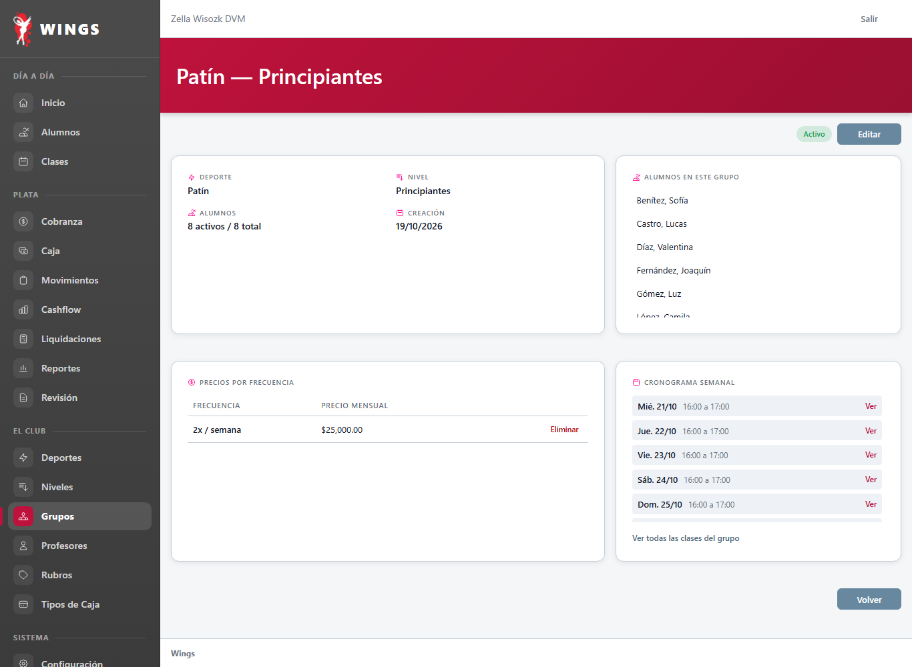
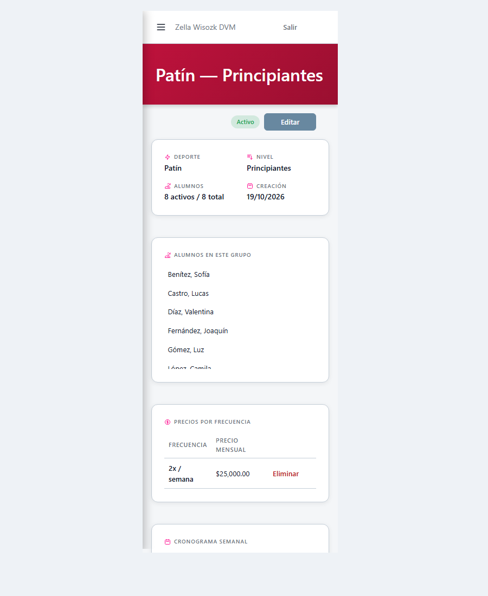
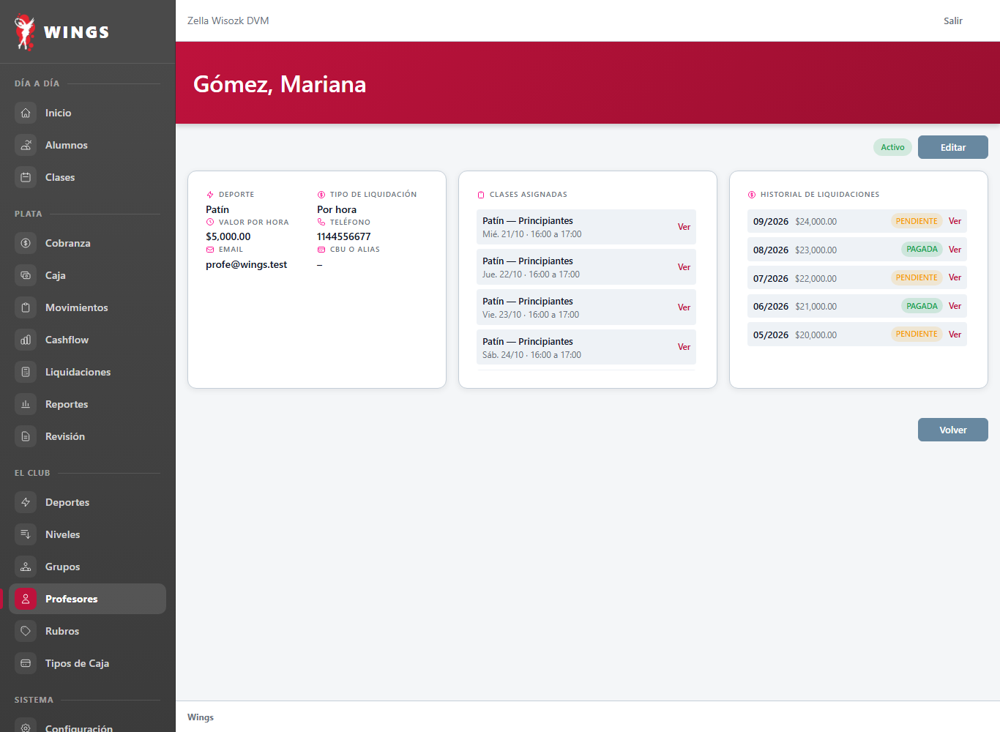
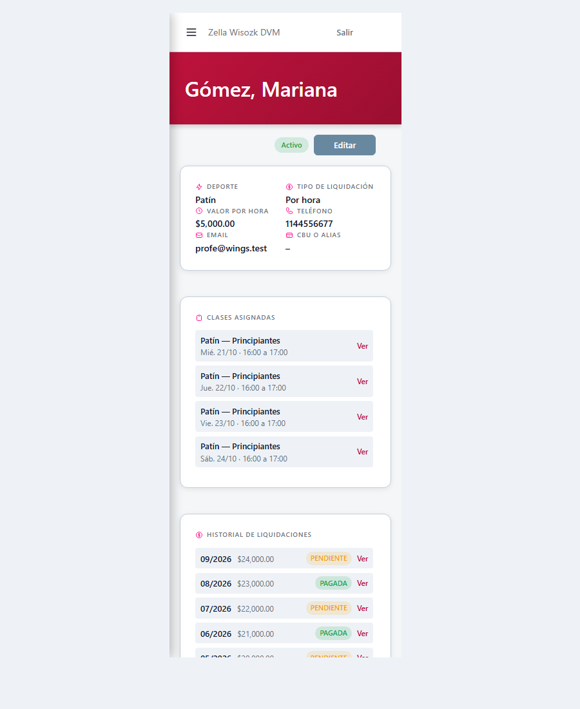

T68: fichas de grupo y profesor con datos reales Aprobado por Carlos (19/10/2026)
Vistas aprobadas por Carlos el 19/10/2026: «Las vistas están aprobadas». Capturas del sistema andando generadas por Gemini (CAB/CyE).
Ajustes de diseño aprobados:
- Grupo (
grupos/show): Tarjeta «Alumnos en este grupo» equipada con scroll vertical (evita lista infinita y lista todos los alumnos activos en orden alfabético) y tarjeta «Cronograma semanal» con scroll vertical. - Profesor (
profesores/show): Rediseño a 3 columnas en escritorio (Datos|Clases asignadas|Historial) y 1 columna en móvil; acotado a las últimas 5 liquidaciones; contenedores scrollables para clases y liquidaciones.
Sin JavaScript incrustado (cumple AGENTS.md §5-bis). Pruebas AlumnoSinPlanT56T68Test y CspSinCodigoIncrustadoTest en verde.
1. Ficha de Grupo (Alumnos con scroll vertical y Cronograma semanal)


2. Ficha de Profesor (3 columnas: Datos | Clases asignadas | Historial últimas 5)


3. Estados complementarios anteriores (referencia histórica de pruebas)
Casos sin datos o históricos relevados durante la auditoría:
- Grupo sin clases futuras: computadora · teléfono
- Profesor sin datos registrados: computadora · teléfono
- Profesor con ajuste H1: computadora · teléfono